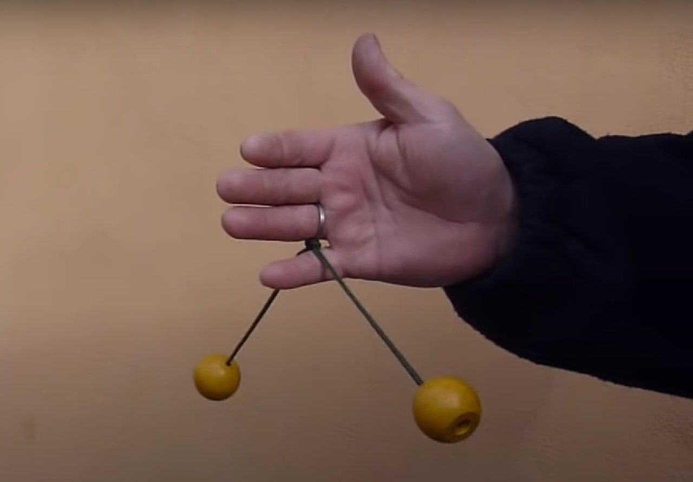

Momentum berkaitan tentang kuantitas gerak dan massa yang dimiliki suatu objek.
Jadi, momentum merupakan besaran yang berhubungan dengan kecepatan dan massa yang dimiliki suatu
benda.
Momentum merupakan ukuran kesukaran untuk mendiamkan dan menggerakkan suatu benda. Semakin besar
massa suatu benda,
maka semakin besar pula usaha yang diperlukan untuk menghentikan benda tersebut benda semakin
sukar untuk dihentikan.
Artinya, semakin besar massa benda, maka momentum yang dimiliki benda akan semakin besar pula.
Semakin besar massa suatu benda, maka semakin besar pula usaha yang diperlukan untuk menghentikan
benda tersebut benda semakin sukar untuk dihentikan. Artinya, semakin besar massa benda,
maka momentum yang dimiliki benda akan semakin besar pula. Jadi, momentum berbanding lurus
dengan massa, atau dapat dituliskan sebagai berikut:
$$p = m \times v$$
Mengapa bahu penembak terpental ke belakang ketika peluru melesat dari laras senapannya?
Kejadian ini sesuai dengan hukum kekekalan momentum. Sebelum peluru ditembakan,
jumlah momentum peluru senapan sama dengan nol. Ketika peluru lepas, momentum peluru
yang mengarah ke depan diimbangi oleh momentum senapan yang mengarah ke belakang dan mendorong
bahu penembak,
sehingga jumlah momentum sistem tetap nol. Gaya yang mendorong bahu penembak ke belakang disebut
gaya pental atau gaya recoil. Gaya pental ini lebih mencolok terjadi dalam peristiwa penembakan
yang
menggunakan pesawat-pesawat tembak proyektif berukuran besar. Oleh karena itu, pesawat tembak
perlu didesain
agar dapat meredam gaya pental itu.
Hukum kekekalan momentum menyatakan bahwa jumlah momentum total dalam suatu sistem tertutup
(dimana tidak ada gaya eksternal yang bekerja) akan tetap konstan. Dengan kata lain,
jika tidak ada gaya eksternal yang mengubah momentum dalam sistem, maka momentum total sistem
akan
tetap sama sepanjang waktu. Hukum kekekalan momentum ini sangat penting dalam memahami berbagai
aspek gerak objek, termasuk dalam ilmu fisika klasik dan ilmu kinematika. Secara matematis,
hukum kekekalan momentum dapat diturunkan sebagai berikut.
perhatikan persamaan di bawah ini!
$$\sum p_\text{sebelum} = \sum p_\text{sesudah}$$
$$m_1 v_{1} + m_2 v_{2} = m_1 v'_{1} + m_2 v'_{2}$$

Tumbukan Lenting Sempurna
Pada tumbukan lenting sempurna berlaku hukum Kekekalan Momentum dan hukum Kekekalan
Energi Kinetik.
Dua benda dapat dikatakan melakukan tumbukan lenting sempurna jika momentum dan energi
kinetik kedua
benda sebelum tumbukan sama dengan momentum dan energi kinetik kedua benda setelah
tumbukan.

Tumbukan Lenting Sebagian
Tumbukan lenting sebagian adalah antara tumbukan lenting sempurna dan tumbukan tidak
lenting sama sekali.
Pada peristiwa tumbukan ini berlaku hukum Kekekalan Momentum tetapi tidak berlaku hukum
Kekekalan Energi
Kinetik karena terdapat perubahan energi kinetik saat tumbukan. Perubahan energi kinetik
pada jenis tumbukan
ini dapat terjadi karena pengurangan energi kinetik maupun pertambahan energi kinetik.
Pada pengurangan
energi kinetik, sebagian energi kinetik dapat diubah menjadi energi lain, seperti energi
panas, energi bunyi,
atau energi potensial. Maka hal tersebut menyebabkan total energi kinetik akhir lebih
kecil daripada total
energi kinetik awal. Sedangkan pertambahan energi kinetik terjadi ketika benda yang
awalnya diam lalu bergerak
setelah tumbukan. Dengan demikian, dapat dituliskan Ek sesudah tumbukan lebih besar Ek
sebelum tumbukan.

Tumbukan Tidak Lenting Sama Sekali
Tumbukan tidak lenting sama sekali yaitu ketika kedua benda setelah bertumbukan akan
menempel satu sama lain
dan bergerak atau diam ke arah yang sama. Pada jenis tumbukan ini hanya berlaku hukum
Kekekalan Momentum.